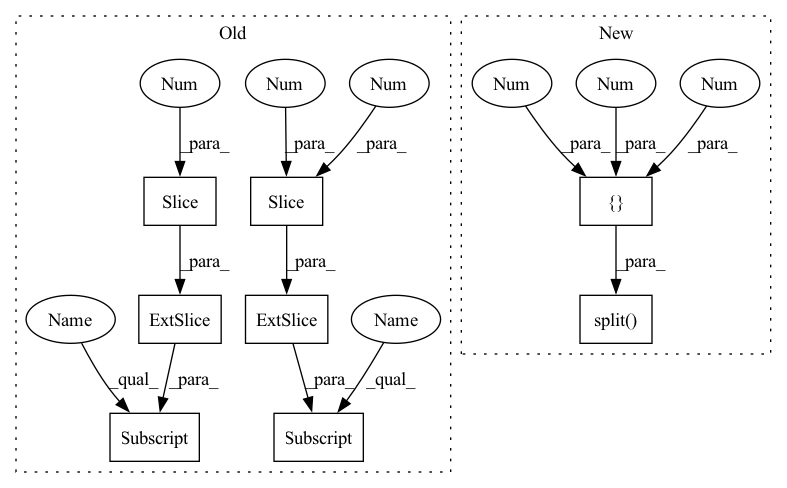

Pattern ID :19980

Before Change
if anchors.shape[-1] == 6: // Currently, it"s yolor anchors
// anchors: [grid_y, grid_x, base_anchor_y, base_anchor_x, stride_y, stride_x]
bboxes_center = preds[:, :2] * 2 * anchors[:, 4:] + anchors[:, :2]
bboxes_hw = (preds[:, 2:4] * 2) ** 2 * anchors[:, 2:4]
else:
anchors_hw = anchors[:, 2:] - anchors[:, :2]
anchors_center = (anchors[:, :2] + anchors[:, 2:]) * 0.5
bboxes_center = preds[:, :2] * anchors_hw + anchors_center
bboxes_hw = tf.math.exp(preds[:, 2:4]) * anchors_hw
preds_top_left = bboxes_center - 0.5 * bboxes_hw
After Change
def decode_bboxes(preds, anchors, return_centers=False):
preds_center, preds_hw, preds_others = tf.split(preds, [2, 2, -1], axis=-1)
if anchors.shape[-1] == 6: // Currently, it"s yolor anchors
// anchors: [grid_y, grid_x, base_anchor_y, base_anchor_x, stride_y, stride_x]
bboxes_center = preds_center * 2 * anchors[:, 4:] + anchors[:, :2]
bboxes_hw = (preds_hw * 2) ** 2 * anchors[:, 2:4]
In pattern: SUPERPATTERN
Frequency: 3
Non-data size: 8
Instances
Fragment ID: 65054450
Project Name: leondgarse/keras_cv_attention_models
Commit Name: 0105d064e05e7d2f4ce9d669ffeb8de9c40ef848
Time: 2022-03-29
Author: leondgarse@gmail.com
File Name: keras_cv_attention_models/coco/anchors_func.py
M Class Name: AnonimousClass
N Class Name: AnonimousClass
M Method Name: decode_bboxes(3)
N Method Name: decode_bboxes(2)
M Parent Class:
N Parent Class:
M File Name: keras_cv_attention_models/coco/anchors_func.py
N File Name: keras_cv_attention_models/coco/anchors_func.py
M Start Line: 162
M End Line: 173
N Start Line: 159
N End Line: 179
'>
Before Change
// bboxes_preds_area = pred_hw[:, 0] * pred_hw[:, 1]
// union_area = bboxes_trues_area + bboxes_preds_area - inter_area
// iou = inter_area / (union_area + self.epsilon)
true_top_left, true_bottom_right = bboxes_trues[:, :2], bboxes_trues[:, 2:4]
true_hw = true_bottom_right - true_top_left
iou = __bbox_iou__(true_top_left, true_bottom_right, true_hw, pred_top_left, pred_bottom_right, pred_hw, epsilon=self.epsilon)
return 1 - iou ** 2
After Change
// union_area = bboxes_trues_area + bboxes_preds_area - inter_area
// iou = inter_area / (union_area + self.epsilon)
// true_top_left, true_bottom_right = bboxes_trues[:, :2], bboxes_trues[:, 2:4]
true_top_left, true_bottom_right, _ = tf.split(bboxes_trues, [2, 2, -1], axis=-1)
true_hw = true_bottom_right - true_top_left
iou = __bbox_iou__(true_top_left, true_bottom_right, true_hw, pred_top_left, pred_bottom_right, pred_hw, epsilon=self.epsilon)
return 1 - iou ** 2
'>
Fragment ID: 65054451
Project Name: leondgarse/keras_cv_attention_models
Commit Name: 9301d0b8f94347c6fe905896c92ce003c6fdab54
Time: 2022-06-29
Author: leondgarse@gmail.com
File Name: keras_cv_attention_models/coco/losses.py
M Class Name: AnchorFreeLoss
N Class Name: AnchorFreeLoss
M Method Name: __iou_loss__(5)
N Method Name: __iou_loss__(5)
M Parent Class: tf.keras.losses.Loss
N Parent Class: tf.keras.losses.Loss
M File Name: keras_cv_attention_models/coco/losses.py
N File Name: keras_cv_attention_models/coco/losses.py
M Start Line: 192
M End Line: 192
N Start Line: 193
N End Line: 193
'>
Before Change
def __bbox_decode_and_ciou__(self, y_true_valid, y_pred_valid, anchors):
// compute_loss https://github.com/WongKinYiu/yolor/blob/main/utils/loss.py//L62
true_center, true_hw = y_true_valid[:, :2], y_true_valid[:, 2:4]
true_top_left = true_center - true_hw / 2
true_bottom_right = true_top_left + true_hw
y_pred_valid_centers = y_pred_valid[:, :2] * 2 - 0.5
After Change
true_top_left = true_center - true_hw / 2
true_bottom_right = true_top_left + true_hw
y_pred_valid_center, y_pred_valid_hw, _ = tf.split(y_pred_valid, [2, 2, -1], axis=-1)
y_pred_valid_center = y_pred_valid_center * 2 - 0.5
y_pred_valid_hw = (y_pred_valid_hw * 2) ** 2 * anchor_ratios
pred_top_left = y_pred_valid_center - y_pred_valid_hw / 2
pred_bottom_right = pred_top_left + y_pred_valid_hw
'>
Fragment ID: 65054452
Project Name: leondgarse/keras_cv_attention_models
Commit Name: 38b6ab286fce5b76b2796869e2f0258a5d40c411
Time: 2022-04-11
Author: leondgarse@gmail.com
File Name: keras_cv_attention_models/coco/losses.py
M Class Name: YOLORLossWithBbox
N Class Name: YOLORLossWithBbox
M Method Name: __bbox_decode_and_ciou__(4)
N Method Name: __bbox_decode_and_ciou__(4)
M Parent Class: tf.keras.losses.Loss
N Parent Class: tf.keras.losses.Loss
M File Name: keras_cv_attention_models/coco/losses.py
N File Name: keras_cv_attention_models/coco/losses.py
M Start Line: 319
M End Line: 324
N Start Line: 338
N End Line: 344